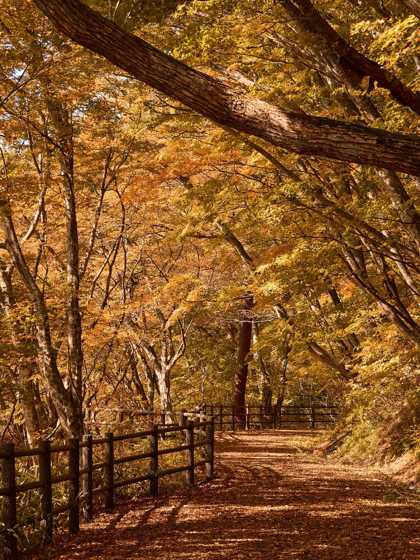

お店の由来・想い
店名の「くくる」は、阿波弁で「結ぶ」という意味だそうです(にし阿波観光圏の紹介ページより)。バスターミナルのすぐ横で、訪れる人と地元との縁を大切にする交流スポットとして紹介されています。
Instagramでは「三好の“ええもん”が集まる、ゆっくりできるお土産＆カフェ」と案内され、「バスターミナルから徒歩0秒」が合言葉。観光の休憩にも、お昼休みにも、散歩の途中にも立ち寄れます。
開業は2024年4月と紹介されています。オーナーの言葉や店名に込めた詳しい想いは確認できていないため、ここでは書いていません。


